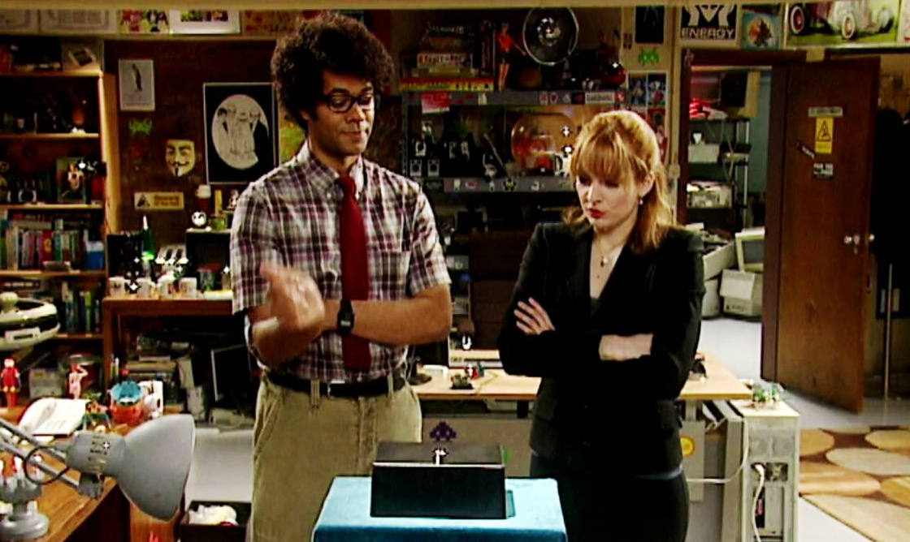

Ideas for blogging
We all have a #shit# lot of work, aren't we? Maybe you try to run a company, have a busy job, do sport, enjoy leisure, watch a movie, read a book or two... My feeling is that time is always flying, I enjoy everyday but rarely have the time to do everything I would like to, and maintaining my blog is one of them. My previous blog started 9 years ago, I did few posts the first few months and then it get lost among the hundreds of other priorities which were always more important.
I really wonder how peoples keep themselves rigorous on writing, specially if they are coders? I hope this time it won't be again my next New Year resolution! And how do you become good at it, is perseverance and persistence the key?
Well as you guessed, this is my new attempt in blogging, a desire in sharing text rather than code! I hope by getting feedback it will keep me motivated, and to get feedback I need first to write something worth reading :)
I know I want my personal blog to be about my experience, a way to share some of my knowledge, a place where I could freely share doubts/questions and try new way to communicate, basta twitter... I hope this won't get lost in the immensity of the Internet, I will definitely try harder this time :)

I'm trying to gather few ideas for the upcoming posts:
- Get started with FreeSWITCH
- MongoDB, aggregation
- Django and Travis-CI
- DevOps with SaltStack
- Deploy your Django site on Docker
- Build API with Flask & SQLAlchemy
We may hear a lot about Python / Django / Flask, but I will definitely do some efforts to not be too religious about the Python world, I'm also interested into Lua, Erlang, GoLang, about Deployment, CI, testing, Telephony, so I guess there is a lot of topiics to the rhythm of the blog.
Stay tuned!